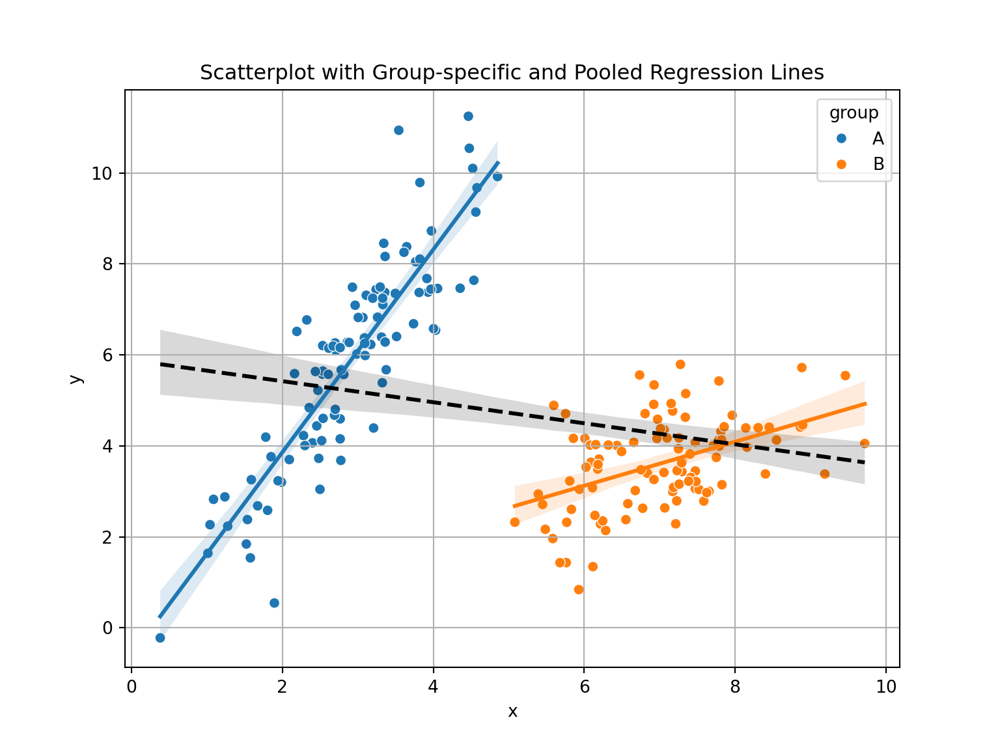
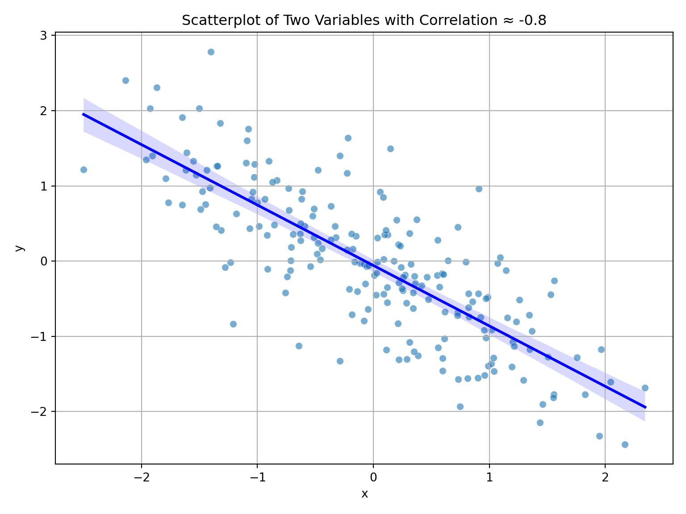
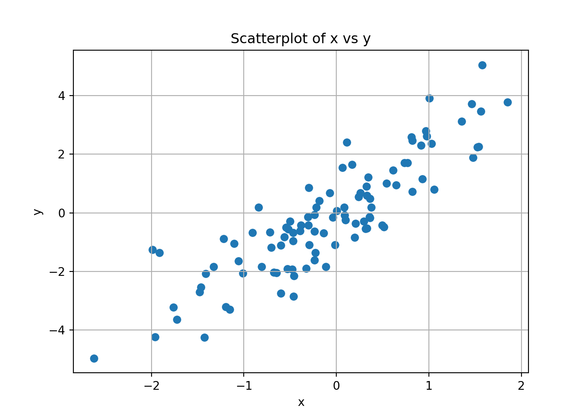
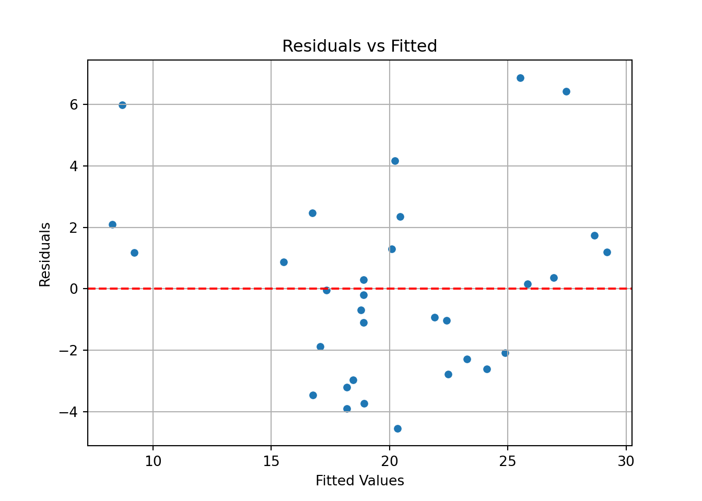
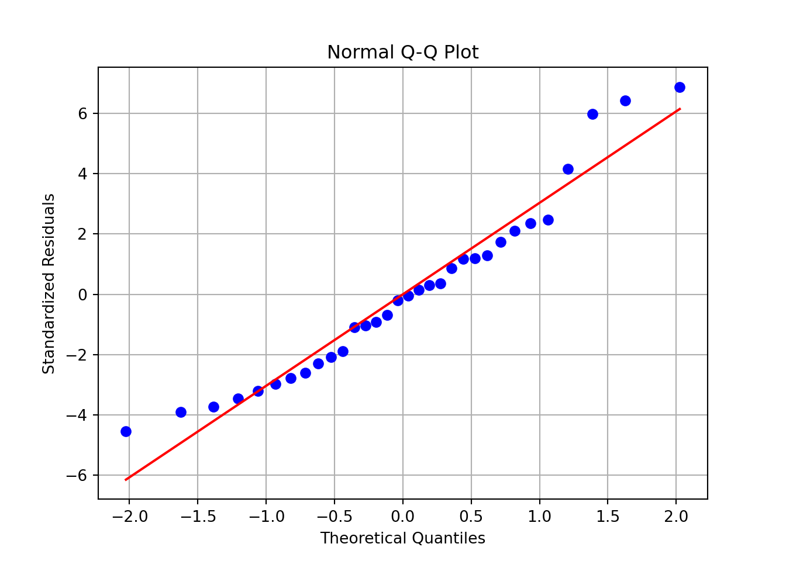
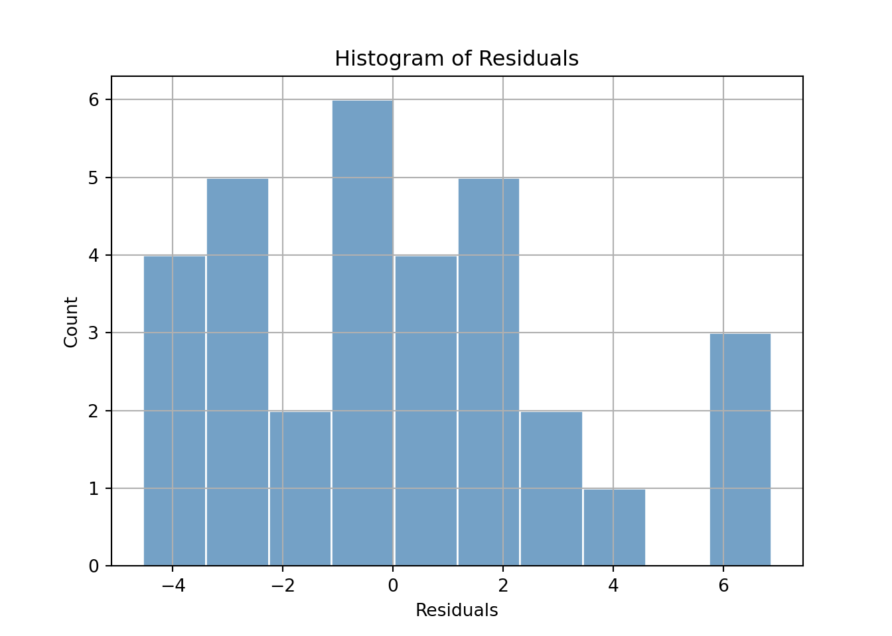
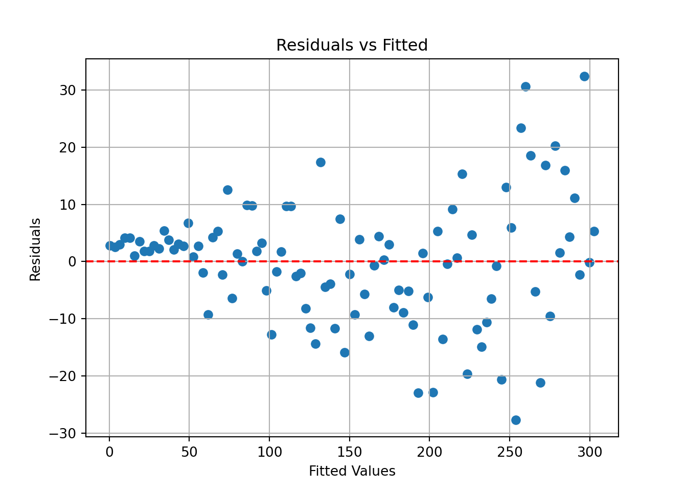
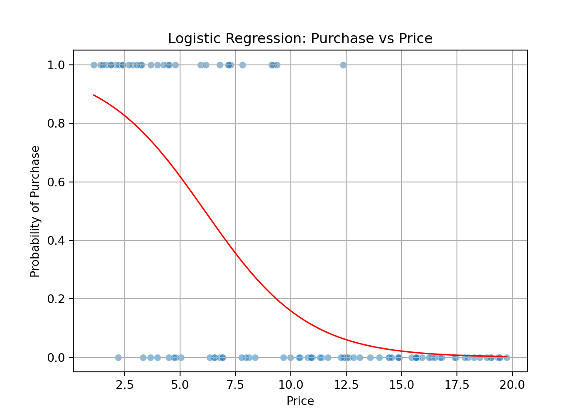
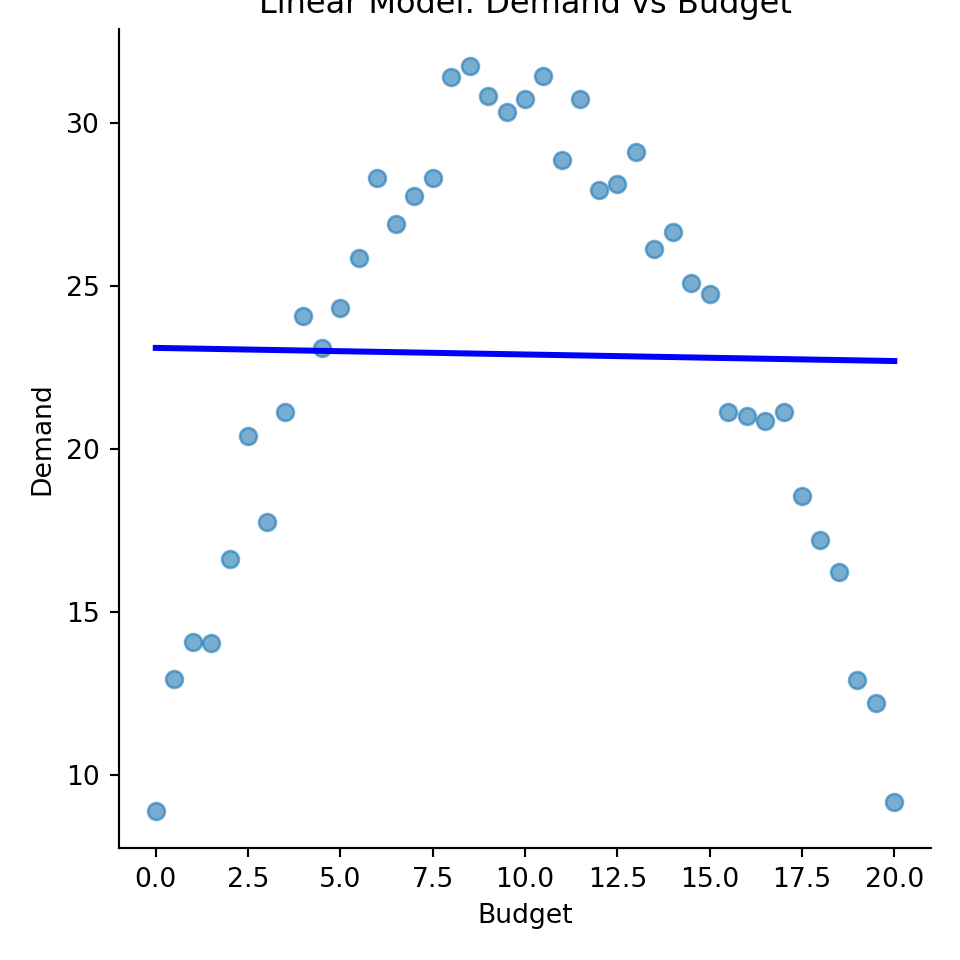
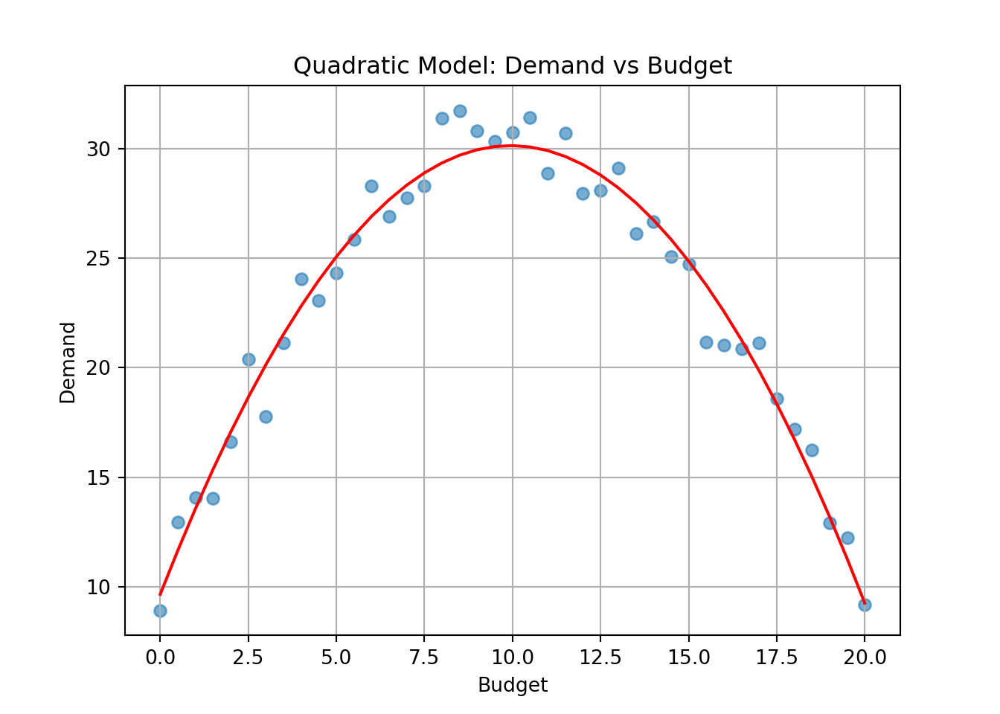

from scipy import stats
print(stats.chi2.ppf(0.95, df = 1))3.841458820694124The Chi-square test for independence is used to determine whether two categorical variables are independent. Given a contingency table of observed counts \(O_{ij}\), compute expected counts under independence:
\[ \begin{align*} E\_{ij} &= \frac{\text{(row total)}_i \times\text{(column total)}_j}{\text{grand total}} \\ \chi^2& = \sum_{ij} \frac{(O_{ij} - E_{ij})^2}{E_{ij}} \end{align*} \]
Where we let \(O_{ij}\) denote observed in each cell ij and \(E_{ij}\) denote expected. \(df = (rows − 1)(columns − 1)\)
A survey records whether people prefer coffee or tea in two regions:
| Coffee | Tea | Total | |
|---|---|---|---|
| Region A | 30 | 20 | 50 |
| Region B | 40 | 10 | 50 |
| Total | 70 | 30 | 100 |
Set up the hypotheses.
Compute the expected counts.
Compute the chi-square statistic.
Test independence at \(\alpha=0.05\)
What do you conclude?
\(H_0\): Coffee preference is independent of region. \(H_a\): They are dependent.
E.g., \(E_{11} = \frac{50*70}{100} = 35\)
Expected table:
| Coffee | Tea | |
|---|---|---|
| Region A | 35 | 15 |
| Region B | 35 | 15 |
\[ \chi^2 = \frac{(30-35)^2}{35} + \frac{(20-15)^2}{15} + \frac{(40-35)^2}{35} + \frac{(10-15)^2}{15} = 4.76 \]
Tests whether observed frequencies match a specified distribution (e.g., uniform, Poisson, etc.).
The test statistic is found as below
\[ \chi^2 = \sum_i \frac{(O_i - E_i)^2}{E_i} \]
\[ \text{df} = \text{number of categories} - 1 \]
A six-sided die is rolled 60 times. The results:
Face: 1 2 3 4 5 6
Freq: 10 12 9 11 8 10We want to find out if these results are consistent with a fair die?
State the hypotheses.
Compute the expected count.
Compute the test statistic and p-value.
Interpret the result.
\(H_0\): The die is fair. \(H_a\): The die is not fair.
Expected = 60/6 = 10 per face
\[ \chi^2 = \sum \frac{(O_i - 10)^2}{10} = \frac{(0)^2 + (2)^2 + (-1)^2 + (1)^2 + (-2)^2 + (0)^2}{10} = \frac{0+4+1+1+4+0}{10} = 1 \] First we will find the degrees of freedom, such that we can have a proper critical value.
\(df = 6 − 1 = 5\), critical value is then \(\chi^2=11.07\).
We can find the exact critical value and compute the p-value of the test in Python.
11.0704976935163510.9625657732472964A survey was conducted to determine if there’s an association between gender (Male, Female) and preference for a new product (Like, Dislike).
Data
| Like | Dislike | Total | |
|---|---|---|---|
| Male | 30 | 20 | 50 |
| Female | 20 | 30 | 50 |
| Total | 50 | 50 | 100 |
State the null and alternative hypotheses.
Calculate the expected frequencies.
Compute the chi-squared test statistic.
Determine the degrees of freedom.
At \(\alpha=0.05\), determine the critical value and conclude the test.
\(H_1\): Gender and product preference are not independent.
Male-Like: (50×50)/100 = 25
Male-Dislike: (50×50)/100 = 25
Female-Like: (50×50)/100 = 25
Female-Dislike: (50×50)/100 = 25
\[ \chi^2=\sum^n_{ij}\frac{(O_{ij}-E_{ij})^2}{E_{ij}}=\frac{5^2+(-5)^2+5^2+(-5^2)}{25}=\frac{100}{25}=4 \]
We can now compute the degrees of freedom simply by looking at the table. \(df=(rows-1)(columns-1)=(2-1)(2-1)=1\), which nets \(\chi_{1,0.05}^2=3.841\)
Critical value at \(\alpha=0.05\) and df = 1 is 3.841. Since 4 > 3.841, we reject \(H_0\). There is a significant association between gender and product preference.
Explain how the chi-squared distribution is related to the standard normal distribution.
Describe the relationship between the standard normal distribution and the chi-squared distribution.
If \(Z\) is a standard normal variable, what is the distribution of \(Z^2\)?
\[ X=\sum^k_{i=1}Z_i^2\sim\chi^2_k \] I.e. a chi-square distribution with k degrees of freedom.
Explain what a contingency table shows in the context of testing independence.
Why are expected counts calculated, and how do they relate to independence?
A contingency table displays the frequency distribution of variables and helps test whether two categorical variables are independent.
Expected counts are computed under the assumption of independence. Large deviations between observed and expected suggest dependence.
A six-sided die is rolled 120 times. The outcomes are: \(1: 10, \ 2: 14, \ 3: 19, \ 4: 24, \ 5: 25, \ 6: 28\)
Set up hypotheses.
Compute expected frequencies.
Perform the chi-squared test at \(\alpha=0.05\).
Interpret the results of the test. How would changing \(\alpha\) change the results of the test?
\(H_0\): Die is fair. \(H_1\): Die is not fair.
Expected: \(120/6 = 20\) for each face.
We find the test statistic. \[ \chi^2 =\frac{100+36+1+16+25+64}{20} =\frac{242}{20}=12.1 \] We can easily find that \(df=6-1=5\)
Now we complete the rest of the computation with Python or with a table.
Critical value: 11.070497693516351p-value: 0.033442946211414415Chi-squared statistic: 12.099999999999998p-value: 0.033442946211414415Expected frequencies:
[20. 20. 20. 20. 20. 20.]With a p-value of about 3%, we can reject \(H_0\) at \(\alpha=0.05\)
Use Python to simulate a 3x2 table, given by the code below, and conduct a chi-squared test. Interpret the results. Use \(\alpha=0.05\) as the significance level.
Data:
[[81 85]
[34 82]
[94 18]]Chi-squared statistic: 70.32890811890222Degrees of freedom: 2p-value: 5.348988237051145e-16Expected frequencies:
[[88.05583756 77.94416244]
[61.53299492 54.46700508]
[59.41116751 52.58883249]]Chi-squared test returns statistic, df, and p-value. Interpretation depends on p-value vs alpha. If our p-value is below that of 0.05, which is our current significance level, then we can reject the null hypothesis, \(H_0\).
Hint: When \(Y\sim\mathcal{N}(\mu, \sigma^2)\), we have that \(E[Y^4]=3\sigma^4\)
\[ X=\sum^k_{i=1}Z^2_i \] Where \(Z_i\sim iid \mathcal{N}(0,1)\)
Now we can begin computing the expectation:
\[ E[X]=E\left[\sum^k_{i=1}Z^2_i\right]=\sum^k_{i=1}E[Z_i^2] \] Now, we can be a bit clever here. Since \(Z\sim\mathcal{N}(0,1)\), and \(Var[Y]=E[Y^2]-(E[Y])^2\), we get
\[ E[Z^2]=Var[Z]+(E[Z])^2 \quad \Rightarrow \quad E[Z^2]=1+0=1 \] This lets us fully compute the expected value for \(X\). We use the fact that we have identical distribution to simpify the notation.
\[ E[X]=\cdots=kE[Z^2]=k*1=k \] Now we can do the same procedure with the Variance. Recall, since \(Z_1,...,Z_k\) are independent, we have that the variance of the sum is the sum of the variances.
\[ Var[X]=Var\left[\sum^k_{i=1}Z^2_i\right]=\sum^k_{i=1}Var[Z_i^2] \] Now, we again use the ralationship that \(Var[Y]=E[Y^2]-(E[Y])^2\). We already know that \(E[Z^2]=1 \Rightarrow (E[Z^2])^2=1\). Now we need only determine \(E[(Z^2)^2]=E[Z^4]\). Using the hint, we have that \(E[Z^4]=3\sigma^4=3*1^2=3\), and we then get:
\[ Var[Z^2]=3-1=2 \] Now we use that we have k identical distributions to get the variance of \(X\) \[ Var[X]=\cdots=kVar[Z^2]=k*2=2k \] Since we know that \(k=4\), we can then conclude on the expected value and variance of \(X\)
\[ E[X]=k=4, \quad Var[X]=2*k=2*4=8 \]”
A researcher models expected frequencies of customer types and compares to observed values. Expected: \(\{40, 35, 25\}\), Observed: \(\{38, 30, 32\}\) Conduct a goodness-of-fit test by hand.
\[ \chi^2 = \frac{(38-40)^2}{40} + \frac{(30-35)^2}{35} + \frac{(32-25)^2}{25} = 0.1 + 0.714 + 1.96 ≈ 2.53 \] \(df=3-1=2\)
At a significance level of \(\alpha=0.05\) we then get a critical value of 5.99, which is higher than the test statistic. I.e. it seems the data fits the distribution well enough.
University admits 30% of male applicants and 25% of female applicants overall. In Engineering, 90% of women and 70% of men were accepted. In Arts, 10% of women and 5% of men were accepted.
How could this occur.
Explain how aggregated vs. disaggregated data leads to paradox.
If way more female students were to apply to arts than to engineering, the total acceptance rate of women would decrease drastically. And if for instance, only 20 men applied to arts, and just one got accepted, then this would hardly have any effect if the engineering department was popular among men.
Aggregation can mask subgroup differences. Simpson’s paradox highlights lurking confounders.
Use Python to simulate two groups and plot overall vs subgroup relationships. Create a scenario in which Simpson’s paradox would apply. The script underneath gives an idea for two simulated groups where Simpson’s paradox could apply.
import numpy as np
import pandas as pd
import matplotlib.pyplot as plt
import seaborn as sns
# Set seed
np.random.seed(42)
# Create data
group = np.repeat(['A', 'B'], 100)
x = np.concatenate([np.random.normal(3, 1, 100), np.random.normal(7, 1, 100)])
y = np.concatenate([
2 * x[:100] + np.random.normal(size=100),
0.5 * x[100:] + np.random.normal(size=100)
])
data = pd.DataFrame({'x': x, 'y': y, 'group': group})
# Plot
plt.figure(figsize=(8, 6));
sns.scatterplot(data=data, x='x', y='y', hue='group');
sns.regplot(data=data[data['group'] == 'A'], x='x', y='y', scatter=False, label=None);
sns.regplot(data=data[data['group'] == 'B'], x='x', y='y', scatter=False, label=None);
sns.regplot(data=data, x='x', y='y', scatter=False, color='black', line_kws={"linestyle": "--"});
plt.title('Scatterplot with Group-specific and Pooled Regression Lines');
plt.grid(True);
plt.show();
Example: Drug Effectiveness Study In a clinical trial, Drug A appears less effective than Drug B overall:
Drug A: 60% recovery
Drug B: 70% recovery
But when you break it down by age group:
Under 50:
Drug A: 90%
Drug B: 80%
Over 50:
Drug A: 30%
Drug B: 20%
Despite being better in both age groups, Drug A looks worse overall because more older, high-risk patients were given Drug A — a classic Simpson’s Paradox.
Explain difference between correlation and covariance.
Interpret \(r = -0.8\).
Covariance is is not is not constrained by any upper or lower bound, whereas correlation is a normalized version bounded on \([−1,1]\), which show how close two variables are to be “perfectly related”.
\(r=-0.8\) would indicate a strong negative linear raltionship between two variables. If you were to plot their points in a two-dimensional plain they would be quite close to creating a neat line.
see plot below
import numpy as np
import pandas as pd
import matplotlib.pyplot as plt
import seaborn as sns
# Set seed
np.random.seed(123)
# Define mean and covariance matrix
mu = [0, 0]
Sigma = [[1, -0.8],
[-0.8, 1]]
# Generate multivariate normal data
data = np.random.multivariate_normal(mu, Sigma, size=200)
df = pd.DataFrame(data, columns=['x', 'y'])
# Check correlation
print("Correlation:", df['x'].corr(df['y']))Correlation: -0.7974792951296004
Given pairs: (1, 2), (2, 3), (3, 5)
Compute sample means.
Compute covariance and correlation.
\[ \mu_X=\frac{1+2+3}{3}=2, \quad \mu_Y=\frac{2+3+5}{3}=\frac{10}{3} \]
\[ Cov(X,Y)=\frac{(1-2)(2-3)+(2-2)(3-3)+(3-2)(5-3)}{2}=\frac{1+2}{2}=\frac{3}{2} \] Now we need the respective standard deviations, which turn out to be, after not much work
\[ s_X= 1, \quad s_Y=\sqrt{14/6}=\sqrt{7/3} \] Finally, we can compute \(r_{XY}\)
\[ r_{XY}=\frac{3/2}{\sqrt{7/3}}=\approx 0.98 \]
Simulate two variables and visualize correlation. What kind of correlation do you see? (e.g. Weak negative, strong positive). Example below.
import numpy as np
import matplotlib.pyplot as plt
# Simulate data
np.random.seed(42) # Optional: for reproducibility
x = np.random.normal(size=100)
y = 2 * x + np.random.normal(size=100)
# Plot;
plt.scatter(x, y);
plt.title("Scatterplot of x vs y");
plt.xlabel("x");
plt.ylabel("y");
plt.grid(True);
plt.show();
With the simulation above you should get a very strong positive correlation between X and Y. You can see this visually in that it would be very easy to draw a positive linear relationship between them that seems representative for the points given.
Assuming we have two normally distributed random variables \(X\) and \(Y\), we can use a variant of a t-test to test for their correlation. The test statistic is given by:
\[ T_r=\frac{r\sqrt{n-2}}{\sqrt{1-r^2}} \] Our null hypothesis is given by \(H_0: \ r=0\). The test statistic will follow a t-distribution with \(df=n-2\)
A professor collects data on 12 students to investigate whether time spent studying is correlated with their exam scores. The data are:
| Study Hours (X) | Exam Score (Y) |
|---|---|
| 2 | 65 |
| 4 | 70 |
| 3 | 68 |
| 5 | 75 |
| 1 | 60 |
| 6 | 80 |
| 4 | 72 |
| 2 | 66 |
| 5 | 78 |
| 3 | 67 |
| 6 | 82 |
| 7 | 85 |
Compute the sample correlation coefficient \(r\).
Test the null hypothesis \(H_0: \rho = 0\) at the 5% significance level.
Interpret the result.
You can use Python, or work by hand similarly to problem 13:
0.9857360065184915This yields \(r \approx 0.986\)
Use the test statistic:
\[ T_r = \frac{r \sqrt{n - 2}}{\sqrt{1 - r^2}} \]
\[ t = \frac{0.986 \sqrt{12 - 2}}{\sqrt{1 - 0.986^2}} = \frac{0.986 \cdot \sqrt{10}}{\sqrt{1 - 0.972}} \approx \frac{0.986 \cdot 3.162}{\sqrt{0.028}} \approx \frac{3.118}{0.167} \approx 18.67 \]
Degrees of freedom = \(n - 2 = 10\)
Look up the critical value for \(t_{0.025, 10} \approx 2.228\)
Since \(t = 15.9 \gg 2.228\), we reject the null hypothesis.
For good measure, lets double check the critical and p-values in R.
critical value: 2.2281388519649385p-value: 2.1004691319603808e-09We VERY clearly reject the null hypothesis here. This should not be surprising, as a) gave us a VERY strong positive correlation.
There is a statistically significant and strong positive correlation between study hours and exam score. The data support the hypothesis that more study time is associated with higher performance.
Give two examples where correlation does not imply causation.
Why are randomized experiments used?
Reasonable examples:
Ice cream sales and drowning could very easily seem positively correlated. When ice cream sales go up we see more drowning, but does that mean ice cream sales lead to drowning? Seems unlikely. Let’s consider, when, both are at their peak. In the summer more people go swimming, and as such more accidents can happen, and this also happens to be the exact time of year when ice cream sales peak as well, due to heat. The scorching sun leads to higher ice cream sales and far more bathing (and consequently accidents).
These effects on both the exposure and the outcome, we call confounders.
Describe a scenario where a confounding variable could lead to misleading correlation.
Example: You may find yourself regressing prevalence of heart disease on coffee consumption, and seem to get a very strong connection. You, however, haven’t controlled for smoking habits. Without controlling for smoking, all the effects of smoking would be attempted explained by coffee-consumption, which could lead to it seeming like a far more serious contributor than what we see in practice.
Explain the importance of random assignment in identifying causal relationships.
Random assignment in experiments let’s us account for both the confounders we are aware of and those we aren’t. When we randomly select enough data points we will find that known and unknown confounders will distribute more evenly across groups. Essentially we can more effectively isolate the relationship between the dependent and the independent variable in a regression.
Given: \(X = (1, 2, 3)\) and \(Y = (2, 2.5, 4).\)
Estimate intercept and slope.
Predict Y when X = 4.
We can start by finding the averages and for \(X\) and \(Y\), before we compute variance and covariacne.
\[ \begin{align*} \bar{X}=\frac{1+2+3}{3}=2, \quad \bar{Y}=\frac{2+5/2+4}{3}=\frac{17}{6} \\ S^2_X=\frac{1}{2}\left((1-2)^2+(2-2)^2+(3-2)^2\right)=1 \\ \widehat{Cov}(X,Y)=\frac{1}{2}(1*\frac{5}{6}+0+1*\frac{7}{6})=\frac{1}{2}\frac{12}{6}=1 \end{align*} \] Now we can compute \(\hat{\beta_1}\) and \(\hat{\beta_0}\)
\[ \hat{\beta_1}=\frac{1}{1}=1, \quad \hat{\beta_0}=\frac{17}{6}-1*2=\frac{5}{6} \] And with that we have estimates for the intercept, 5/6, and slope, 1.
\[ Y_i=\frac{5}{6}+X_i+\varepsilon \] What we would like now is the conditional expected value of \(Y\) when \(X=4\). Recall recall that \(E[\varepsilon]=0\), and \(\varepsilon\) is also independent of \(X\), meaning \(E[\varepsilon|X]=E[\varepsilon]\)
We then get
\[ E[Y|X=4]=E\left[\frac{5}{6}+X_i+\varepsilon|X=4\right]=\frac{5}{6}+E[X_i|X=4]+E[\varepsilon]=\frac{5}{6}+4=\frac{29}{6} \]
You fit a linear model (it doesn’t really matter in this case what you are looking at, just think of it as a simple linear regression):
import pandas as pd
import statsmodels.api as sm
import statsmodels.formula.api as smf
# Load the mtcars dataset
mtcars = sm.datasets.get_rdataset("mtcars", "datasets").data
# Fit the linear model
model = smf.ols('mpg ~ wt', data=mtcars).fit()
# Augment the model with predictions and residuals
augmented = mtcars.copy()
augmented['fitted'] = model.fittedvalues
augmented['residuals'] = model.resid
# Print the model summary
print(model.summary()) OLS Regression Results
==============================================================================
Dep. Variable: mpg R-squared: 0.753
Model: OLS Adj. R-squared: 0.745
Method: Least Squares F-statistic: 91.38
Date: Fri, 27 Feb 2026 Prob (F-statistic): 1.29e-10
Time: 11:30:43 Log-Likelihood: -80.015
No. Observations: 32 AIC: 164.0
Df Residuals: 30 BIC: 167.0
Df Model: 1
Covariance Type: nonrobust
==============================================================================
coef std err t P>|t| [0.025 0.975]
------------------------------------------------------------------------------
Intercept 37.2851 1.878 19.858 0.000 33.450 41.120
wt -5.3445 0.559 -9.559 0.000 -6.486 -4.203
==============================================================================
Omnibus: 2.988 Durbin-Watson: 1.252
Prob(Omnibus): 0.225 Jarque-Bera (JB): 2.399
Skew: 0.668 Prob(JB): 0.301
Kurtosis: 2.877 Cond. No. 12.7
==============================================================================
Notes:
[1] Standard Errors assume that the covariance matrix of the errors is correctly specified.import matplotlib.pyplot as plt
import seaborn as sns
from scipy import stats
# Residuals vs fitted:
plt.figure();
sns.scatterplot(x='fitted', y='residuals', data=augmented);
plt.axhline(0, color='red', linestyle='dashed');
plt.title('Residuals vs Fitted');
plt.xlabel('Fitted Values');
plt.ylabel('Residuals');
plt.grid(True);
plt.show();


For each plot, describe which regression assumption it assesses, and what pattern would indicate the assumption holds.
Based on the plots, assess whether the assumptions of linear regression are likely satisfied in this model.
Give your thoughts on the model.
do as above
We don’t have that many points that are used in our regression, but they stil give some idea.
If any of these show clear violations (e.g., funnel shape, skewed histogram), mention the likely issue and suggest remedies like transformation or robust methods.
Simulate and fit the following model in R:
import numpy as np
import pandas as pd
import matplotlib.pyplot as plt
import statsmodels.api as sm
# Simulate data
np.random.seed(0)
x = np.arange(1, 101)
y = 3 * x + np.random.normal(scale=x / 5, size=100)
# Create DataFrame
df = pd.DataFrame({'x': x, 'y': y})
# Fit linear model
X = sm.add_constant(df['x']) # Add intercept
model = sm.OLS(df['y'], X).fit()
# Print summary
print(model.summary()) OLS Regression Results
==============================================================================
Dep. Variable: y R-squared: 0.985
Model: OLS Adj. R-squared: 0.985
Method: Least Squares F-statistic: 6614.
Date: Fri, 27 Feb 2026 Prob (F-statistic): 9.19e-92
Time: 11:30:44 Log-Likelihood: -379.15
No. Observations: 100 AIC: 762.3
Df Residuals: 98 BIC: 767.5
Df Model: 1
Covariance Type: nonrobust
==============================================================================
coef std err t P>|t| [0.025 0.975]
------------------------------------------------------------------------------
const -2.5259 2.183 -1.157 0.250 -6.858 1.806
x 3.0521 0.038 81.325 0.000 2.978 3.127
==============================================================================
Omnibus: 3.233 Durbin-Watson: 1.969
Prob(Omnibus): 0.199 Jarque-Bera (JB): 3.079
Skew: 0.159 Prob(JB): 0.215
Kurtosis: 3.799 Cond. No. 117.
==============================================================================
Notes:
[1] Standard Errors assume that the covariance matrix of the errors is correctly specified.
What does the residual plot suggest about the assumptions?
Why is this a problem for inference?
Suggest a fix.
Residual variance clearly increases with fitted values, which is a classic sign of heteroskedasticity.
Standard errors may be incorrect, leading to misleading confidence intervals and p-values, which again can lead a researcher to wild or misleading conclusions.
Use log(y), square-root(y), or weighted least squares to stabilize variance.
You model test scores using study hours and gender:
import pandas as pd
import statsmodels.formula.api as smf
# Create the DataFrame
df = pd.DataFrame({
'score': [80, 85, 70, 90],
'hours': [4, 5, 3, 6],
'female': pd.Categorical([0, 1, 0, 1]) # treated as a categorical variable
})
# Fit the linear model
model = smf.ols('score ~ hours + C(female)', data=df).fit()
# Print the model summary
print(model.summary())C:\Users\s15052\ONEDRI~3\DOKUME~1\VIRTUA~1\R-RETI~1\Lib\site-packages\statsmodels\stats\stattools.py:74: ValueWarning: omni_normtest is not valid with less than 8 observations; 4 samples were given.
warn("omni_normtest is not valid with less than 8 observations; %i "
OLS Regression Results
==============================================================================
Dep. Variable: score R-squared: 0.971
Model: OLS Adj. R-squared: 0.914
Method: Least Squares F-statistic: 17.00
Date: Fri, 27 Feb 2026 Prob (F-statistic): 0.169
Time: 11:30:44 Log-Likelihood: -6.5683
No. Observations: 4 AIC: 19.14
Df Residuals: 1 BIC: 17.30
Df Model: 2
Covariance Type: nonrobust
==================================================================================
coef std err t P>|t| [0.025 0.975]
----------------------------------------------------------------------------------
Intercept 48.7500 8.927 5.461 0.115 -64.676 162.176
C(female)[T.1] -2.5000 5.590 -0.447 0.732 -73.530 68.530
hours 7.5000 2.500 3.000 0.205 -24.266 39.266
==============================================================================
Omnibus: nan Durbin-Watson: 1.000
Prob(Omnibus): nan Jarque-Bera (JB): 0.667
Skew: 0.000 Prob(JB): 0.717
Kurtosis: 1.000 Cond. No. 39.9
==============================================================================
Notes:
[1] Standard Errors assume that the covariance matrix of the errors is correctly specified.Note that with so few observations, Python will not calculate the Omnibus test.
Explain the meaning of each coefficient.
What is the baseline category for gender, and how is the effect of gender represented?
If we were to interpret this model, it would seem being a female had a negative effect, but if we look closer at the data we may see why. Notice that the females did better than the males, but that they also spent more hours studying. The regression tells us that we dont have very conclusive data here, but one could suspect that the first few hours of studying would grant you more of a point increase than the next few, i.e. a diminishing return.
You have a fitted model: \(y = 10 + 2x\) with residual standard error of 3.
What is the difference between a 95% confidence interval and a 95% prediction interval for a given x-value?
Which interval is wider and why?
Write expressions for both intervals at x = 5.
CI estimates the mean value of \(y\) at a given \(x\), at some range of values. PI estimates the value of a new individual at that \(x\).
The PI is wider because it includes variability both from the estimate of the mean and from individual variation.
Assuming \(x = 5\): \(\hat{y} = 10 + 2(5) = 20\)
Now we could theoretically use estimated SE and residual error to calculate intervals.
A company fits a logistic regression model to understand how the price of a product affects the likelihood that a customer will purchase it. The model output is:
\[ \log\left(\frac{p}{1 - p}\right) = 3 - 0.5 \times \text{price} \]
where \(p\) is the probability that a customer buys the product.
Interpret the coefficient of \(price\) in context.
What is the odds ratio associated with a 1-unit increase in price?
Calculate the predicted probability that a customer will buy the product when the price is $10.
Sketch (or describe) what the logistic curve would look like based on this model.
Based on the model, what would happen to the predicted probability of purchase as the price increases toward $20?
The coefficient of -0.5 means that for every 1-unit increase in price, the log-odds of purchase decreases by 0.5. In other words, as price increases, the probability of purchase decreases.
The odds ratio is \(e^{-0.5} \approx 0.61\). This means the odds of purchasing are multiplied by 0.61 for each $1 increase in price.
At price = 10:
\[ \log\left(\frac{p}{1 - p}\right) = 3 - 0.5 \times 10 = -2 \Rightarrow p = \frac{1}{1 + e^{2}} \approx 0.12 \]
The logistic curve is an S-shaped curve that starts near 1 when price is low (e.g., close to $0), and decreases smoothly toward 0 as price increases.
As the price increases toward 20 USD, the exponent in the model becomes more negative, and the probability \(p\) approaches 0. Customers are highly unlikely to purchase at very high prices under this model.
A company wants to understand how the price of a product affects the probability that a customer will purchase it. The following dataset shows simulated purchase behavior for 100 customers, where \(buy = 1\) means the customer made a purchase and \(buy = 0\) otherwise.
import numpy as np
import pandas as pd
# Set seed for reproducibility
np.random.seed(42)
# Generate data
price = np.random.uniform(1, 20, 100)
log_odds = -0.5 * price + 3
prob_buy = 1 / (1 + np.exp(-log_odds))
buy = np.random.binomial(1, prob_buy)
# Create DataFrame
df = pd.DataFrame({'price': price, 'buy': buy})Predict the probability of purchase when the price is $10.
Plot the logistic regression curve and observed data points.
Generalized Linear Model Regression Results
==============================================================================
Dep. Variable: buy No. Observations: 100
Model: GLM Df Residuals: 98
Model Family: Binomial Df Model: 1
Link Function: Logit Scale: 1.0000
Method: IRLS Log-Likelihood: -35.867
Date: Fri, 27 Feb 2026 Deviance: 71.734
Time: 11:30:45 Pearson chi2: 72.1
No. Iterations: 6 Pseudo R-squ. (CS): 0.4151
Covariance Type: nonrobust
==============================================================================
coef std err z P>|z| [0.025 0.975]
------------------------------------------------------------------------------
Intercept 2.6312 0.640 4.111 0.000 1.377 3.886
price -0.4299 0.087 -4.922 0.000 -0.601 -0.259
==============================================================================0.15873234194196import seaborn as sns
import matplotlib.pyplot as plt
import numpy as np
# Plot points and logistic regression curve
sns.scatterplot(x='price', y='buy', data=df, alpha=0.5);
# Generate a smooth curve for predicted probabilities
price_range = np.linspace(df['price'].min(), df['price'].max(), 300);
prob_curve = model.predict(pd.DataFrame({'price': price_range}));
plt.plot(price_range, prob_curve, color='red', linewidth=1.2);
plt.title('Logistic Regression: Purchase vs Price');
plt.xlabel('Price');
plt.ylabel('Probability of Purchase');
plt.grid(True);
plt.show();
The negative coefficient for price implies that as price increases, the likelihood of purchase decreases.
A researcher is studying how the number of hours a student studies and whether they attend a prep course affect their exam score. They collect data from 10 students and fit the following model:
\[ \text{score} = 55 + 5 \cdot \text{hours} + 8 \cdot \text{prep} \]
Where:
Interpret the coefficient for hours.
Interpret the coefficient for prep.
Predict the score of a student who studied for 4 hours and attended the prep course.
Predict the score of a student who studied for 4 hours and did not attend the prep course.
For every additional hour studied, the expected exam score increases by 5 points, holding prep course attendance constant.
Students who attended the prep course are predicted to score 8 points higher than those who did not, for the same number of study hours.
For a student with 4 hours and prep = 1:
\[ \text{score} = 55 + 5 \cdot 4 + 8 \cdot 1 = 55 + 20 + 8 = 83 \]
\[ \text{score} = 55 + 5 \cdot 4 + 8 \cdot 0 = 55 + 20 = 75 \]
A marketing analyst builds the following regression model to predict weekly sales (in $1000s) based on the amount spent on online ads and whether the store is in an urban location:
\[ \text{sales} = 20 + 3.5 \cdot \text{ad-spend} + 7 \cdot \text{urban} \]
Where:
Interpret the coefficient for ad_spend.
Interpret the coefficient for urban.
Predict sales for a store that spends $2000 on ads and is in an urban location.
Predict sales for a store with the same ad spend but in a non-urban location.
Each additional $1000 in ad spending increases expected weekly sales by $3,500.
Urban stores are expected to generate $7,000 more in sales, all else equal.
\(\text{sales} = 20 + 3.5 \cdot 2 + 7 \cdot 1 = 20 + 7 + 7 = 34\) → $34,000
\(\text{sales} = 20 + 7 = 27\) → $27,000
You are given a fitted model:
\[ \text{income} = 15000 + 2500 \cdot \text{education} \]
Where education is years of schooling.
You receive student-generated residual plots: a histogram of residuals, a QQ plot, and a scatterplot of residuals vs fitted values.
The histogram is left-skewed. What might this indicate?
The residual vs fitted plot shows a funnel shape. What does that imply?
Left-skewed histogram suggests residuals are not normally distributed, which in and of itself may not be a huge problem, but it at a certain magnitude a left skew also makes the distribution of residuals vary far from being symmetrical. Major left skewness can significantly affect the estimation by leading to a positive bias.
Funnel shape implies heteroskedasticity; variance increases with predicted values.
A model is fit to assess how advertising budget affects product demand:
\[ \text{demand} = 10 + 4 \cdot \text{budget} - 0.2 \cdot \text{budget}^2 \]
Interpret the model.
At what budget is demand maximized?
Compute expected demand when budget = 5.
Should a linear or quadratic model be preferred here, and why?
Underneath is some r code for visualisation help
Initial increases in budget raise demand, but at higher levels the negative squared term causes diminishing returns.
Vertex of the parabola: \(x = \frac{-b}{2a} = \frac{-4}{2(-0.2)} = 10\)
We treat this like any parabola.
\[ demand'=4-0.4\cdot budget=0 \quad \Rightarrow \quad budget=10 \] This is clearly a maximum when you consider that the squre term s negative.
\(\text{demand} = 10 + 4(5) - 0.2(25) = 10 + 20 - 5 = 25\)
Quadratic is better if diminishing returns are evident in data (verified via residual plots or model comparison).
# Simulate data
import numpy as np
import pandas as pd
np.random.seed(123)
budget = np.arange(0, 20.5, 0.5)
demand = 10 + 4 * budget - 0.2 * budget**2 + np.random.normal(0, 1, len(budget))
data = pd.DataFrame({'budget': budget, 'demand': demand})
import statsmodels.formula.api as smf
# Linear model
model0 = smf.ols('demand ~ budget', data=data).fit()
print("Linear Model Summary:")Linear Model Summary: OLS Regression Results
==============================================================================
Dep. Variable: demand R-squared: 0.000
Model: OLS Adj. R-squared: -0.025
Method: Least Squares F-statistic: 0.01279
Date: Fri, 27 Feb 2026 Prob (F-statistic): 0.911
Time: 11:30:46 Log-Likelihood: -135.36
No. Observations: 41 AIC: 274.7
Df Residuals: 39 BIC: 278.1
Df Model: 1
Covariance Type: nonrobust
==============================================================================
coef std err t P>|t| [0.025 0.975]
------------------------------------------------------------------------------
Intercept 23.1001 2.066 11.181 0.000 18.921 27.279
budget -0.0201 0.178 -0.113 0.911 -0.380 0.340
==============================================================================
Omnibus: 4.299 Durbin-Watson: 0.093
Prob(Omnibus): 0.117 Jarque-Bera (JB): 2.974
Skew: -0.495 Prob(JB): 0.226
Kurtosis: 2.128 Cond. No. 22.9
==============================================================================
Notes:
[1] Standard Errors assume that the covariance matrix of the errors is correctly specified.
Quadratic Model Summary: OLS Regression Results
==============================================================================
Dep. Variable: demand R-squared: 0.970
Model: OLS Adj. R-squared: 0.969
Method: Least Squares F-statistic: 622.6
Date: Fri, 27 Feb 2026 Prob (F-statistic): 9.08e-30
Time: 11:30:46 Log-Likelihood: -63.211
No. Observations: 41 AIC: 132.4
Df Residuals: 38 BIC: 137.6
Df Model: 2
Covariance Type: nonrobust
==================================================================================
coef std err t P>|t| [0.025 0.975]
----------------------------------------------------------------------------------
Intercept 9.6512 0.524 18.402 0.000 8.589 10.713
budget 4.1180 0.121 33.945 0.000 3.872 4.364
I(budget ** 2) -0.2069 0.006 -35.282 0.000 -0.219 -0.195
==============================================================================
Omnibus: 0.548 Durbin-Watson: 1.979
Prob(Omnibus): 0.760 Jarque-Bera (JB): 0.663
Skew: -0.129 Prob(JB): 0.718
Kurtosis: 2.432 Cond. No. 532.
==============================================================================
Notes:
[1] Standard Errors assume that the covariance matrix of the errors is correctly specified.# Visualize both models
import seaborn as sns
import matplotlib.pyplot as plt
# Linear model plot
sns.lmplot(x='budget', y='demand', data=data,
line_kws={"color": "blue"},
scatter_kws={"s": 40, "alpha": 0.6},
ci=None);
plt.title('Linear Model: Demand vs Budget');
plt.xlabel('Budget');
plt.ylabel('Demand');
plt.show();
# Quadratic model plot
# Need to manually generate the fitted curve
data['budget_squared'] = data['budget'] ** 2
data['fitted_quad'] = model1.predict(data[['budget', 'budget_squared']])
plt.figure();
plt.scatter(data['budget'], data['demand'], alpha=0.6);
plt.plot(data['budget'], data['fitted_quad'], color='red');
plt.title('Quadratic Model: Demand vs Budget');
plt.xlabel('Budget');
plt.ylabel('Demand');
plt.grid(True);
plt.show();
You fit a model and check these diagnostics:
Which regression assumptions are violated?
What could be done to address these?
Would transforming variables help? Explain.
Linearity and homoscedasticity assumptions are violated.
Consider polynomial terms for non-linearity, and weighted least squares or transformations for heteroskedasticity.
Yes log-transforming the response or predictors can stabilize variance or linearize relationships.
You build two models:
import numpy as np
import pandas as pd
import statsmodels.api as sm
# Simulate data
np.random.seed(123)
n = 100
x = np.random.normal(size=n)
y = 3 * x + np.random.normal(size=n)
data = pd.DataFrame({'x': x, 'y': y})
import statsmodels.formula.api as smf
# Simple linear model A
model_a = smf.ols('y ~ x', data=data).fit()
print("Model A: Simple Linear Regression")Model A: Simple Linear Regression OLS Regression Results
==============================================================================
Dep. Variable: y R-squared: 0.923
Model: OLS Adj. R-squared: 0.923
Method: Least Squares F-statistic: 1180.
Date: Fri, 27 Feb 2026 Prob (F-statistic): 1.84e-56
Time: 11:30:46 Log-Likelihood: -138.83
No. Observations: 100 AIC: 281.7
Df Residuals: 98 BIC: 286.9
Df Model: 1
Covariance Type: nonrobust
==============================================================================
coef std err t P>|t| [0.025 0.975]
------------------------------------------------------------------------------
Intercept -0.0191 0.098 -0.195 0.846 -0.214 0.175
x 2.9834 0.087 34.357 0.000 2.811 3.156
==============================================================================
Omnibus: 5.027 Durbin-Watson: 1.860
Prob(Omnibus): 0.081 Jarque-Bera (JB): 5.131
Skew: -0.308 Prob(JB): 0.0769
Kurtosis: 3.924 Cond. No. 1.13
==============================================================================
Notes:
[1] Standard Errors assume that the covariance matrix of the errors is correctly specified.# Model B:
# Manually add polynomial terms up to degree 10
for degree in range(2, 11):
data[f'x^{degree}'] = data['x'] ** degree
# Define predictor variables (x, x^2, ..., x^10)
X = data[['x'] + [f'x^{i}' for i in range(2, 11)]]
X = sm.add_constant(X) # add intercept
# Fit model
model = sm.OLS(data['y'], X).fit()
# Print summary
print(model.summary()) OLS Regression Results
==============================================================================
Dep. Variable: y R-squared: 0.927
Model: OLS Adj. R-squared: 0.919
Method: Least Squares F-statistic: 113.8
Date: Fri, 27 Feb 2026 Prob (F-statistic): 2.94e-46
Time: 11:30:46 Log-Likelihood: -136.05
No. Observations: 100 AIC: 294.1
Df Residuals: 89 BIC: 322.8
Df Model: 10
Covariance Type: nonrobust
==============================================================================
coef std err t P>|t| [0.025 0.975]
------------------------------------------------------------------------------
const 0.1046 0.233 0.448 0.655 -0.359 0.568
x 3.1152 0.609 5.112 0.000 1.904 4.326
x^2 -1.1750 1.118 -1.051 0.296 -3.396 1.046
x^3 0.0469 1.210 0.039 0.969 -2.357 2.451
x^4 1.5973 1.410 1.133 0.260 -1.204 4.398
x^5 -0.1238 0.752 -0.165 0.870 -1.619 1.371
x^6 -0.6898 0.655 -1.053 0.295 -1.991 0.612
x^7 0.0312 0.178 0.175 0.861 -0.323 0.385
x^8 0.1156 0.125 0.927 0.356 -0.132 0.363
x^9 -0.0020 0.014 -0.139 0.890 -0.030 0.026
x^10 -0.0065 0.008 -0.783 0.435 -0.023 0.010
==============================================================================
Omnibus: 6.530 Durbin-Watson: 1.946
Prob(Omnibus): 0.038 Jarque-Bera (JB): 7.138
Skew: -0.382 Prob(JB): 0.0282
Kurtosis: 4.062 Cond. No. 6.89e+04
==============================================================================
Notes:
[1] Standard Errors assume that the covariance matrix of the errors is correctly specified.
[2] The condition number is large, 6.89e+04. This might indicate that there are
strong multicollinearity or other numerical problems.You test both on new data and Model A performs better.
Why might Model A outperform B despite having fewer predictors?
What is overfitting?
How does cross-validation help avoid it?
Model B may have overfit noise in training data; simpler model generalizes better. Model A also has an innate advantage in that we prefer simpler models. By studyin R-squared and adjusted R-squared in both A and B we can tell that teh additional vairables don’t really help explain the realtionship.
Overfitting: model captures noise rather than signal, reducing generalizability. The danger here is that if you can perfectly explain a sample, you may have been unlucky, and found effects that aren’t necessarily present in the entire population, no matter how rpresentative the sample.
Cross-validation assesses performance on unseen data, discouraging overfitting.I.e., you validate a model by using it on more than just the data it was built on.
A model is developed to predict house prices. Another researcher claims, “This model proves that number of bedrooms causes higher prices.”
Is this a valid conclusion?
What’s the difference between prediction and causal inference?
Under what conditions could we argue causation?
No, correlation is not causation. Though the model sees that more bedrooms tend to be associated with higher prices, the model itself it is made as a forecast, it is not capable of making inferences on a causal relationship.
Prediction focuses on accurate forecasts; explanation seeks underlying causal mechanisms.
Causation requires random assignment or strong quasi-experimental design to eliminate confounding.
Given: \(\text{score} = 50 + 2 \cdot \text{study\_hours}\) You calculate:
What do these intervals represent?
Why is the prediction interval wider?
If we wanted to reduce the width of both, what could help?
CI gives a range for mean score of all students studying 6 hours; PI gives range for a new individual’s score.
PI includes both model uncertainty and residual variability.
Increasing sample size reduces standard errors, narrowing both intervals.
You compare two models:
Can we conclude Model 2 is better?
What’s a limitation of using R² alone?
Suggest a better metric.
Not necessarily; depends on context and number of predictors. The R-squared is quite similar, so that on it’s own can’t really tel the whole story.
\(R^2\) can never decrease when adding more predictors, and this can be misleading. In theory, one could add a thousand predictors, all of whom barely increase the \(R^2\), but will in the end only help to overfit the model.
There are different measures, like adjusted R-squared and AIC, both of whom punish adding explanatory variables that dont contribute.
You include dummy variables for 4 regions: North, South, East, West.
What problem arises if all 4 are included in the regression model?
How should this be handled?
The model will have what we call perfect colinearity, which leads to the model not being able to estimate parameters due to linear dependence.
Omit one region as reference category; remaining coefficients are interpreted relative to it. E.g. we take North as the base region, now all other dummies will display coefficients that indicate a score relative to north as a basis. (This is not common practice, but one can also omit the intercept \(\beta_0\), instead of a category)
A regression includes both “income” and “wealth”, which are highly correlated.
What is multicollinearity and how does it affect regression?
How can it be detected?
What might you do to resolve it?
Multicollinearity inflates standard errors, making estimates unstable, and it comes from high correlation between several explanatory variables. Perfect multicolinearity comes into play when we have two or more perfectly correlated explanatory variables (height in feet and height in cm for instance)
Check variance inflation factors (VIF) or the correlation matirx.
Dropping one variable or combining both into one are common fixes.
A regression of \(Y\) on \(X\) shows curvature. You try \(log(X)\):
\[ Y = \beta_0 + \beta_1 \log(X) \]
Why use this transformation?
What does \(\beta_1\) now represent?
When might a log-log model be preferable?
To linearise exponential-like relationships. In essence, we can create a line best-fit line that much more clearly fits our data.
For our model a roughly 1% positive change in \(X\) will be reflected as a \(\b_1\) cahnge in \(Y\)
When both \(X\) and \(Y\) span many orders of magnitude or show multiplicative effects, a log-log model may be appropriate.
A model:
\[ \text{score} = 40 + 5 \cdot \text{study} + 10 \cdot \text{prep} + 4 \cdot \text{study} \cdot \text{prep} \]
Where prep is 0 or 1.
What does the interaction term mean?
Compute predicted scores for 4 hours of study with and without prep.
Interpret the effect of study hours with and without prep.
The Interaction term tells us that the effect study hours will have on the score, will also be affected by whether or not the students chooses to participate in the prep course.
Researchers collected data on the size of their feet for a group of right-handed male and females and counted how many of each sex had a left-foot larger than the right, equal feet or right foot larger than the left. The results are given in the table here:
| Sex | L>R | L=R | L<R | Total |
|---|---|---|---|---|
| Men | 2 | 10 | 28 | 40 |
| Women | 55 | 18 | 14 | 87 |
Does the data indicate that gender has a strong effect on the development of foot asymmetry? Specify the null- and alternative hypothesis, compute the \(\chi^2\) test statistic and obtain the p-value.
$H_0: $ Gender and foot asymmetry are independent.
$H_A: $ Gender and foot asymmetry are dependent.
| Sex | L>R | L=R | L<R | Total |
|---|---|---|---|---|
| Men | 2 | 10 | 28 | 40 |
| Women | 55 | 18 | 14 | 87 |
| Total | 57 | 28 | 42 | 127 |
Expected values under the null hypothesis:
\(e_{ij} = \frac{o_{\cdot j}o_{i\cdot}}{n}\), e.g. \(e_{22}= \frac{28\cdot 87}{127}=19.18\).
| Sex | L>R | L=R | L<R | Total |
|---|---|---|---|---|
| Men | 17.95 | 8.82 | 13.23 | 40 |
| Women | 39.05 | 19.18 | 28.77 | 87 |
| Total | 57 | 28 | 42 | 127 |
Test statistic: \[\chi^2 = \sum_{i=1}^2\sum_{j=1}^3 \frac{(o_{ij}-e_{ij})^2}{e_{ij}}=\frac{(2-17.95)^2}{17.95}+\cdots + \frac{(14-28.77)^2}{28.77}=45.00\]
p-value:
P-value: 0.0000p-value is zero. This indicates strong evidence against the null hypothesis. We would conclude that foot asymmetry depends on gender.
import numpy as np
from scipy.stats import chi2_contingency
# Construct the contingency table
# Rows: Men, Women
# Columns: L > R, L = R, L < R
table = np.array([
[2, 10, 28],
[55, 18, 14]
])
# Perform the chi-square test of independence
chi2, p, dof, expected = chi2_contingency(table, correction = False)
# Display results
print(f"Chi-square statistic: {chi2:.4f}")Chi-square statistic: 45.0029Degrees of freedom: 2P-value: 0.0000Expected frequencies:[[17.95275591 8.81889764 13.22834646]
[39.04724409 19.18110236 28.77165354]]A company wants to assess whether customer response (Yes/No) to a marketing campaign depends on the platform used (Email, SMS, Social Media).
| Response | SMS | Social Media | |
|---|---|---|---|
| Yes | 120 | 45 | 80 |
| No | 180 | 105 | 120 |
\(H_0\): Platform used and response are independent.
\(H_0\): Platform used and response are dependent.
| Response | SMS | Social Media | Total | |
|---|---|---|---|---|
| Yes | 120 | 45 | 80 | 245 |
| No | 180 | 105 | 120 | 405 |
| Total | 300 | 150 | 200 | 650 |
Expected values under the null hypothesis:
\(e_{ij} = \frac{o_{\cdot j}o_{i\cdot}}{n}\), e.g. \(e_{22}= \frac{150\cdot 405}{650}=19.18\).
| Response | SMS | Social Media | Total | |
|---|---|---|---|---|
| Yes | 113.08 | 56.54 | 75.38 | 245 |
| No | 186.92 | 93.46 | 124.62 | 405 |
| Total | 300 | 150 | 200 | 650 |
Test statistic: \[\chi^2 = \sum_{i=1}^2\sum_{j=1}^3 \frac{(o_{ij}-e_{ij})^2}{e_{ij}}=\frac{(120-113.08)^2}{113.08}+\cdots + \frac{(120-124.62)^2}{124.62}=4.91\]
Degrees of freedom is \[(\text{number of rows} -1)\times(\text{number of columns} -1) = (2-1)\cdot (3-1)=2.\]
We find the p-value:
P-value: 0.0859Since p-value > 5%, we do not reject the null hypothesis. There is not sufficient evidence to suggest that response is dependent on platform used.
import numpy as np
from scipy.stats import chi2_contingency
# Construct the contingency table
# Rows: Yes, No
# Columns: Email, SMS, Social Media
table = np.array([
[120, 45, 80],
[180, 105, 120]
])
# Perform the chi-square test of independence
chi2, p, dof, expected = chi2_contingency(table, correction = False)
# Display results
print(f"Chi-square statistic: {chi2:.4f}")Chi-square statistic: 4.9131Degrees of freedom: 2P-value: 0.0857Expected frequencies:[[113.07692308 56.53846154 75.38461538]
[186.92307692 93.46153846 124.61538462]]The Norwegian Labour and Welfare Administration (NAV) organizes online job application workshops on Teams. The course responsible has noticed that except for himself, the attendees that have their camera on during the course is mostly the older participants. He wonders if there is a relationship between participants having camera on and participant’s age group? He therefore takes a screenshot of the meeting (that he deletes afterwards, of course) and counts the number of faces he sees for the different ages. The results are given in the table below. Perform a chi-squared test to answer this question, including setting up the hypothesis, finding the p-value and making your conclusion. Remember to settle on a significance level first.
| Camera on | 18–35 | 36–53 | 54-70 | Total |
|---|---|---|---|---|
| Yes | 4 | 3 | 20 | 27 |
| No | 20 | 13 | 39 | 72 |
| Total | 24 | 16 | 59 | 99 |
Is there a Simpson’s paradox here?
The course responsible just wants to test out a curiousity, and can set a relatively high significance level. Let’s say \(\alpha = 10\%\).
\(H_0:\) Age group and whether a person has their camera on are independent variables.
\(H_A:\) Age group and whether a person has their camera on are dependent variables.
Expected values under the null hypothesis:
\(e_{ij} = \frac{o_{\cdot j}o_{i\cdot}}{n}\), e.g. \(e_{11}= \frac{24\cdot 27}{99}=6.54\).
| Camera on | 18–35 | 36–53 | 54-70 | Total |
|---|---|---|---|---|
| Yes | 6.54 | 4.36 | 16.1 | 27 |
| No | 17.5 | 11.6 | 42.9 | 72 |
| Total | 24 | 16 | 59 | 99 |
Calculate test statistic:
\[\chi^2 = \sum_{i=1}^2\sum_{j=1}^3 \frac{(o_{ij}-e_{ij})^2}{e_{ij}}=\frac{(4-6.54)^2}{6.54}+\cdots + \frac{(39-42.9)^2}{42.9}=3.25\] P-value: \(P(\chi^2 > 3.25)=1-P(\chi^2 \le3.25 )= 0.197\)
Since the p-value is above \(\alpha = 0.1\), we fail to reject the null hypothesis. There is not sufficient evidence to suggest that age group and whether they have their camera on is dependent variables.
import numpy as np
from scipy.stats import chi2_contingency
# Contingency table: Rows = Camera on (Yes/No), Columns = Age groups
table = np.array([
[4, 3, 20],
[20, 13, 39]
])
# Perform the chi-square test of independence
chi2, p, dof, expected = chi2_contingency(table, correction = False)
# Display results
print(f"Chi-square statistic: {chi2:.4f}")Chi-square statistic: 3.2528Degrees of freedom: 2P-value: 0.1966Expected frequencies:[[ 6.54545455 4.36363636 16.09090909]
[17.45454545 11.63636364 42.90909091]]Is there a Simpson’s paradox here? For that, we calculate the rates of “camera on” for each age group:
| Age group | 18–35 | 36–53 | 54-70 | Total |
|---|---|---|---|---|
| Rate of camera on | 16.7% | 18.8% | 33.9% | 27.3% |
| Observations | 24 | 16 | 59 | 99 |
The rate of camera on increases with age group. For the number of observations, we also see that more participants are in the elder group. The proportion of age group 54-70 among camera users is 20/27 = 74.1%, and for the “No” group 39/72=54.2%. Hence, the “Yes” group has disproportionately more older people, who are more likely to use the camera. There is no reversal of trends between the subgroups and the aggregate — rather, the aggregate reflects the within-group pattern (camera usage increases with age). Therefore, there is no Simpson’s paradox here.